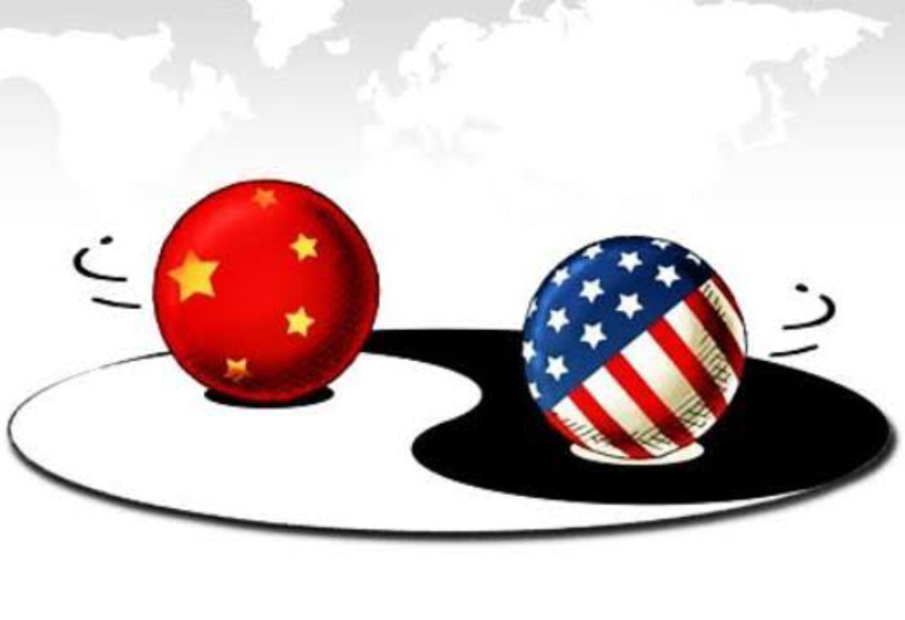
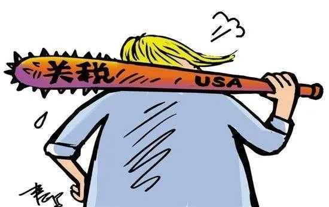
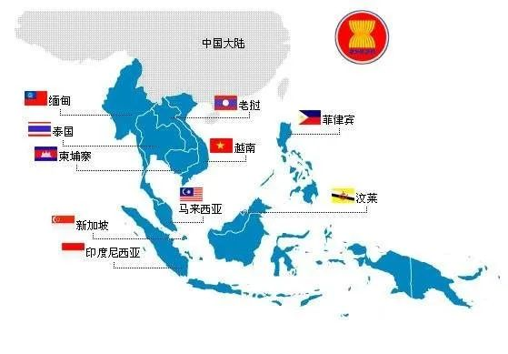

收录于合集

国政学人(IPS)本周推出【国别研究】专栏，推荐内容源于《亚洲调查》（Asian
Survey）杂志于2020年初专题推出的世界各国2019年发展综述，这些综述对我们整体把握全球经济、政治与社会发展动态具有较强的参考价值。公众号后台（会话页面）回复“亚洲调查”即可阅读本专栏系列文章。
** ** 系列文章 （点击 蓝字 即可阅读）
：东北亚：朝鲜、韩国、日本；东南亚：越南、新加坡、马来西亚；南亚中亚：印度、阿富汗；大国研究：美国、俄罗斯，敬请关注。 ****
****
作品简介
【作者】 Jonathan Holslag，比利时布鲁塞尔自由大学国际政治学教授。
【编译】 戴赟（国政学人编译员 波士顿大学）
【审校】 徐一凡
【排版】 贺奕
【来源】 Holslag, J. (2020). The United States and Asia in 2019: Grandstanding. Asian Survey, 60 (1), 8-20.
期刊简介
《亚洲调查》（Asian Survey）创刊于1961年，是美国唯一的同类学术期刊, 提供了有关南亚、东南亚和东亚国家内当代国际关系的全面回顾，关注亚洲国家发展重大进展中的特殊主题和年度回顾。该期刊是由加利福尼亚大学出版社出版的同行评审学术期刊，以双月刊形式发行。主编是Uk Heo。2015年影响因子（Impact Factor）为0.328。
2019年美国在亚洲：洋相百出
The United States and Asia in 2019: Grandstanding
Jonathan Holslag
内容提要
特朗普政府在2019年的亚洲政策表现出力不从心和低效无能。在经济、战略和合作关系方面，美国步履维艰，蹒跚前行，陷入困境，这尤其体现在与中国和朝鲜的交往过程中。总体而言，美国更多地是出尽洋相而无其他作为。
【关键词】 美国外交政策 中国 朝鲜 东盟 洋相百出
文章导读
01
概览
当欧洲人时常抱怨美国不再对欧洲地区给予足够的重视之时，亚洲的一些专家学者与政府官员也常会感同身受。需要明确的是，特朗普总统在2019年访问过亚洲4次，一次是对日本进行国事访问，还有一次是对阿富汗的简短访问，剩下两次则主要是关于他与朝鲜领导人金正恩的个人外交。特朗普一度步行至朝韩非军事区的北侧，这对美国的亚洲政策意义非凡。在缺席2018年的APEC峰会、东亚峰会和美国- 东盟峰会之后，这位美国总统再一次缺席了2019年的东亚峰会和美国- 东盟峰会。2019年，原计划在智利举行的亚欧首脑会议被取消。美国副总统对亚洲甚至一次访问都没有。国务卿的66次国事访问中仅访问了6个亚洲国家。不过，美国国务院仍在其印太报告中指出总统已将美国在印太地区的参与作为该届政府的头等大事。
但是，我们应该如何评估又一年的亚洲政策呢？能帮助我们理解的标志性事件是什么？美国对亚洲政策的计划是显而易见的。鉴于美国未能推进自由秩序或是建立一个区域秩序来增强地区不同国家的实力，美国的应变之策只能是抑制中国崛起。这在美国总统的联合国大会讲话，副总统在对华关系上的重要讲话，以及众议院民主党领袖的演讲中都有所体现。
有鉴于此，美国不可避免地需要进行 内部平衡（internal balancing），通过地区伙伴继续进行外部平衡（external balancing）， 以及 避免过早地卷入冲突之中， 以期从精疲力竭的阿富汗战争与伊拉克战争中恢复过来。这三个战略要点是美国亚洲政策的核心，本文将根据这三个战略要点回顾2019年的美国亚洲政策。
第一项任务，即内部平衡的完成程度将通过考虑经济和军事政策以及外交参与的情况进行评估。 就中美关系而言，经济再平衡将意味着停止敏感的技术转让，减少大规模的贸易失衡，并重新分配战略性产业以避免反向依赖（reverse dependency）。对此，华盛顿必须启用新经济现实主义的策略来保证自由市场的运行。内部平衡还需化解中国的军事成就，对于困难的解决，平衡不只是一种信号示意，而是需要落到实处。比如，面对中国在南海的军事部署，美国应部署更为有力的海军进行应对。
外部平衡与内部平衡密不可分。 外部制衡 即说服其他国家共同抑制崛起国。美国的印太报告中隐晦重申了投资伙伴关系的需要。本文将评估美国在重新调整与其他亚洲国家的贸易关系方面取得的进展。本文还将审视美国为回应中国的军事发展而争取更多的地区国家以保障安全所进行的共同努力。这些努力可能涉及军事演习、安全对话以及促进互联互通（interoperability）等方面。
本文将回顾美国在内部平衡与外部平衡的作为。第一部分会讨论美国在该地区中合作伙伴关系的经济维度。第二部分涉及军事与安全合作。第三部分涉及外交沟通、互相信任及正当性问题。这些问题将根据美国与印度、日本、韩国、澳大利益和东盟不断发展的伙伴关系加以讨论。最后，该文考虑了朝鲜这一疑难问题。本文总结了，话语转变之下，美国的外交政策依旧没有过多变动。我们发现，尽管现在已经是美国宣称将外交重心转移亚洲后的的第八个年头，也是特朗普就任后的第三个年头，仍然没有迹象表明战略再平衡战略已被认真执行。美国与中国的贸易关系受到新的进口关税壁垒影响，但尚无证据显示中国的经济雄心有所受挫，或是美国本土经济实力有所增强。在军事方面，美国的平衡之力微乎其微，最多只能减缓美国统治地位的衰弱。包括印度、日本、韩国、澳大利亚和东南亚国家在内的区域合作伙伴仍将中国崛起而非美国无法明确的意图作为其对外政策的前提。而且也没有多少迹象显示美国成功解决了朝核问题和在阿富汗的伊斯兰恐怖主义问题。用“洋相百出”来形容2019年美国的亚洲政策最为贴切不过了。

02
经济方面：“关税大王”（maharaja of tariffs）
由于美国仍未参与亚洲的多边贸易倡议， 其亚洲经济政策的重点是解决与中国的不平衡伙伴关系。 美国的决策者重申了对不公平竞争的关注，尤其对中国的经济模式提出诸多批评。
然而，之后美国总统的讲话似乎预示着其从全面的经济安全考量转向短期考量，即促使中国答应购买更多的大豆。2019年，美国承接上一年的政策继续对2000亿美元商品征收10%的进口关税，并在2019年的5月份将关税提升至25%，9月对另外112亿美元的商品再征收15%的关税。10月，华为与其他中国科技公司一起被列入黑名单。在中国承诺购买更多大豆和其他原材料后，贸易休战协议才得以达成。12月，中国政府同意派出贸易代表团前往华盛顿签署协议，确认休战，并承诺大幅增加从美国的进口。
至少就2019年贸易数据而言，美国对华贸易政策的效果并非具有决定性质。美国与中国在2019年前三季度的贸易逆差仍为2500亿美元。相比于2018年少了700亿美元，但仍与特朗普总统第一任期开始之时的数额一样大。此外，中国的某些商品正通过第三国出口，比如墨西哥。而且中国做出的妥协只能部分解决不平衡的贸易。中国许诺会从美国进口更多的原材料，包括能源和农产品。这在将于2020年1月签署的中美第一阶段经贸协议上也有所体现。（原文作于2019年，下文同）
中国进口商品旨在减少总体顺差，但同时也为了确保中国工业产品进入美国市场。从北京的立场来看，进口更多的原材料旨在维持其工业部门的盈余，所以，这对中国来说并非实质性的让步。这项协议使中国的原材料进口多样化，同时保护其工业生产。因此，将于2020年1月达成的第一阶段经贸协议可能有助于减少总体贸易额的不平衡，但也可能导致新的贸易结构不平衡并置美国于原料供应商的地位。
没有迹象表明对抗性贸易政策会像白宫说得那样鼓动美国公司在其本土进行更多的投资或在其他亚洲国家扩大生产。 在2019年底，美国制造业产量创2009年以来的最低点，而且制造业投资也没有大幅增加。
那美国公司是否至少将部分投资从中国转移到了其他亚洲国家呢？这对于重新平衡亚洲地区力量分布并帮助印度或东盟繁荣发展都是相当重要的。2018年，美国国会通过《建设法》（BUILD Act），旨在促进对发展中国家的基础设施的投资，从而平衡中国日益增长的影响力。然而，没有任何迹象表明投资大量从中国转移到了其他亚洲国家。在美国对亚洲的直接投资中，中国所占份额相当之大，即使美国推出《亚洲再保证倡议法》（Asia Reassurance Initiative），依旧没能使美国的大量投资从中国转移到该地区的其他国家中。
尽管美国向中国征收进口关税，但贸易依旧大量集中在中国。统计数据证明，美国的对华贸易政策虽然给亚洲其他国家带去了好处，但这种好处是非常有限的。
中国在亚洲地区的区域经济影响力是非常之大的，对大多数亚洲国家而言，中国是比美国还重要的出口国。中国超越美国成为日本和泰国最重要的出口市场。因此，没有数据证明美国的贸易政策加强了美国或其伙伴在该地区的地位。特朗普政府经济影响力的局限性还体现在围堵中国电信公司华为的案例上。到2019年底，至少有14个亚洲国家接受了该公司参与其5G电信网络的准备或开发工作，只有两个国家完全排除了华为。
美国的经济政策并没有赋予其伙伴以实力，相反，它还经常阻碍这些国家。 2019年美国政府取消对印度的普遍优惠制（Generalized System of Preferences）,印度曾是该制度的主要受益者。对此，印度政府实施了报复措施。之后，美印之间似乎有部分协议正在达成，但由于贸易争端，尤其是美国一位资深贸易顾问称印度为“关税大王”之后，印度政府和议会对此表示极大愤慨。因此，美印之间的贸易协定胎死腹中。作者后文举出，相类似的贸易压力与紧张关系也体现在日本、泰国和菲律宾等国之中。特朗普的贸易政策令人感到敌意，中国的贸易政策却吸引诱人。2019年，中国与日本以及韩国达成协议，继续致力于建设区域全面经济合作伙伴关系（Regional Comprehensive Economic Partnership），并与毛里求斯、巴基斯坦和新西兰签署或升级贸易协定。
这一节的最后一部分是有关技术转移的。人们经常争辩道， 美国与中国的经济冲突中最重要的方面不是贸易而是技术。 所以，华盛顿方面决定禁止类似华为这样的公司参与关键基础设施的建设之中。全面评估美国在多大程度上成功限制了技术转让，已经超出了本文的范围。不过，很明显，美国的此项限制并未说服其重要盟友，欧盟长期以来一直是军民两用技术（military and dual-use technology）的主要开发者，而在2019年仍同意与中国在敏感领域展开合作。比如，法国同意加强与中国在太空探索方面的合作。

03
安全问题：力不从心
2019年，美国通过“太平洋先锋”（Pacific Vanguard)等演习和新的航行自由行动（包括11月的双重行动）多次展示了其军事实力。但在最近几年中，美军遭遇了多起事故，包括海军舰艇相撞和飞机坠毁。这些坠机事故是由于训练不足，维护不善和乘组人员疲劳操作引起的。 地区指挥官强调了美军应对各种威胁的能力相当有限。 能力不足的方面有：攻击型核潜艇、潜艇补给能力、先进的反舰导弹、战略空运和海运能力、轰炸机、情报搜集、监视系统、侦查平台、军需供应和靶场。 即使在和平时期，力不从心仍困扰着美国印度太平洋司令部（INDOPACOM）。
特朗普总统宣布通过增加国防开支来支持军队， 军费从2018年的6390亿美元增加到2019年的6860亿美元。相比之下，2019年，中国官方的国防预算在1780亿美元，相比2018年上涨110亿美元。不过，由于中国拥有众多先进的武器系统，包括导弹、电子作战和大量训练有素的士兵，对美国来说仍不失为一个小的挑战。
美国军费开支的增长似乎并没有让其安全感舒缓下来。2019年，美国太平洋舰队扩编了三艘新的濒海战斗舰（littoral combat ships），其中一架装备了新型海军攻击导弹（Naval Strike Missile, NSM）。关岛还增加了两架无人机。即便如此，美国印度太平洋司令部还是在正式场合宣布， 军费开支的增加依旧无法弥补缺陷不足。 之后作者再度说明美国在印度太平洋地区确实缺乏足够数量的潜艇。该司令部还表示，美军目前尚不清楚他们如何在未来危机中有效应对台湾或朝鲜半岛的危机。
美国的合作伙伴却没有忽视这种情况。一群澳大利亚专家警告道：“中国削弱了美军在印度太平洋地区的能力。”日本国家防卫研究所（National Institute for Defense Studies）谈到美国的威慑力时，指出其威慑力“正进一步地过时”，美国只是处于反应模式，只能对中国和俄罗斯的军事现代化作出反应，而不是掌握节奏，并发出这已经成了既定事实（a fait accompli）的警告。
美国政府要求日本和韩国支出更多的财政以维持美国军事存在的做法也让日韩两国感到不畅。 首尔在多个方面都感到极为不满，体现在：特朗普要求韩国增加5倍军费的要求，为讨好朝鲜而中止美韩联合军演，以及总统希望撤走在驻韩美军的声明。总而言之，这些举措引发了盟友对安全联盟稳固性的切实担忧。一位具有影响力的韩国专家这么说到：“美韩联盟确实病入膏肓。”最重要的是，美国印太司令部司令菲利普·戴维森指出，美国、日本、澳大利亚和印度这四方联盟（松散的安全集团）也被搁置。尽管美国国务院和国防部发表了各种声明以示加强这种关系，虽然美国的核心双边同盟依旧存在，却仍旧不尽如人意。
即使军事方面有积极的发展也不够全面。《印度太平洋战略报告》强调了印度作为区域安全参与者的重要性。但是，对于新德里而言，军事接触更多地是要确保尽可能多的选择，而不是结盟。2019年，印度还与中国和俄罗斯方面进行了合作。美国与越南的关系同样也在减弱。2019年，越南同意与俄罗斯建立更紧密的防务关系。2019年9月，美国海军与所有十个东盟国家一起组织了第一次军事演习，但在那之前，有六个国家已经和中国举行过演习了。不仅如此，一些国家继续从中国订购防卫系统。美国虽然表现出其在中国南海的存在与决心，但已无法阻挡中国在南海填海造陆的行为，更无法去破坏中国的其他政策了。
除中国外，对美国在亚洲安全政策的另一块重要的试金石便是朝鲜。 美朝关系缓和后一年左右的时间，双方对对方的幻想就破灭了。2019年2月在河内举行的朝美峰会上，特朗普与朝鲜领导人金正恩甚至都没有达成初始协议。6月在朝韩非军事区举行的会议并没有改变这一点。在停滞了一年多的时间后，朝鲜再次开始试射导弹。从5月起到12月之间，朝鲜进行了十次这样的测试。作者在后文指出朝鲜对远程导弹火星-15（Hwasong-15）以及新型导弹发动机（可能是固体燃料的变体）的运用便可证实朝鲜在核武和导弹制造计划上的持续稳定发展。
朝鲜还扩大了远程核导弹的生产设施。至2019年底，无核化谈判显然已经走到了尽头，金正恩要求美国在2019年底之前拿出一个解决方案的要求将无法实现。美朝双方回到了原点，但美国却为此付出了沉重的代价。特朗普的个人外交风格不仅在东京和首尔屡遭挫败，事实还证明了这种外交风格的局限性，它把时间拱手让与平壤方面并使其能悄无声息地扩大威慑能力又使之现代化。
04
合作伙伴：“一股卓越的力量”
贯穿奥巴马政府的亚太再平衡战略和特朗普政府的印太战略的一个主轴即是加强伙伴关系。 就经济和军事内容而言，2019年这些伙伴关系没有增强许多。在外交和政治交往中，美国即使没有使该地区群情激愤，也使该地区倍感失望。对抗性贸易政策显然滋生了中国的战略不信任甚至是愤恨。不过，这也使美国的伙伴与同盟感到焦虑不安。以东盟为例，2018年，特朗普总统让副总统彭斯代替他参与在新加坡举行的东盟和东亚峰会。2019年时，他只派去了国家安全顾问，这被视为一种侮辱。大多数亚洲国家元首拒绝参加会议。在东亚峰会的间隙，领导人宣称要提高贸易开放度，以对抗西方的贸易保护主义，并继续发展区域全面经济伙伴关系（Regional Comprehensive Economic Partnership）,这是中国特别提倡的贸易协议。马来西亚前总理马哈蒂尔·穆罕默德（Mahathir Mohamad）一贯批判美国，并指出：“美国只允许每位总统连任两届。因此，最糟糕的情况是，如果特朗普连任，这种情况最多再持续五年。”
有迹象表明，美国作为印太地区主角的吸引力和正当性受到质疑。 许多亚洲领导人表示，他们拒绝接受美国二元善恶的做法或是拒绝在两大强国之间做出选择。新加坡总理李显龙说道：“作为首屈一指的强国，美国要做出最艰难的调整。”他还补充道：“美国对于将中国的愿望纳入现行规则体系形成新的认知将会非常值得。”印度尼西亚总统佐科·维多多（Joko Widodo）呼吁东盟与中国建立包容性的亚洲秩序和协同体系。在日本，有66%的人口表示对美国总统无法信任，在韩国则是54%。这相比前几任美国总统的情况要糟糕很多。许多国家对待中国的态度没有表现得很积极，但似乎也不愿意接受美国的领导。

05
结论
本文的总体结论是： 2019年，美国在亚洲面临两个主要挑战，即朝鲜的核计划与中国的稳步崛起。 就朝鲜而言，特朗普政府坚持以其不太高明的个人身份对金正恩提议，最终遭到了失败。对于中国，美国政府坚持对抗路线，也最终失败。留给美国的只有一个初步的贸易协议，而这只能部分解决贸易不平衡问题。
从军事上来说，鉴于中国人民解放军强大的实力，国防开支的增加并没有减缓美国印度太平洋司令部（INDOPACOM）的力不从心。尽管美国的印太政策在纸面上呈现了更为全面和多样化的亚洲政策，但很明显，实际上印太政策中只涉及中国和朝鲜这两个重要的着力点。尽管美国在纸面上这么说，却没有做出显著的努力来加强与其他国家的伙伴关系或试图影响亚洲的多边主义。美国不仅将对抗性贸易政策运用于中国，还运用在其他国家的身上，这引起了普遍的不满。在安全方面，美国也未能使其伙伴和盟国信服。作为其内部和外部平衡的手段，这种不成熟的亚洲政策也没起多大作用。因此，无论从哪方面看，2019年美国亚洲政策的特征即是洋相百出而非卓有成效。
本文由国政学人独家编译推荐，文章观点不代表本平台观点，转载请联系授权。
往期精彩
** （点击 蓝字 即可阅读）**
大国研究：美国、俄罗斯


好好学习，天天“在看”